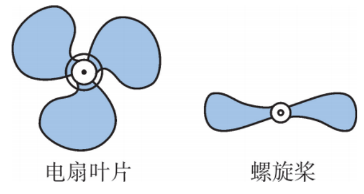
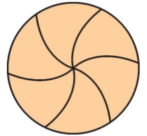
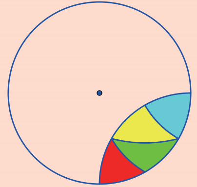
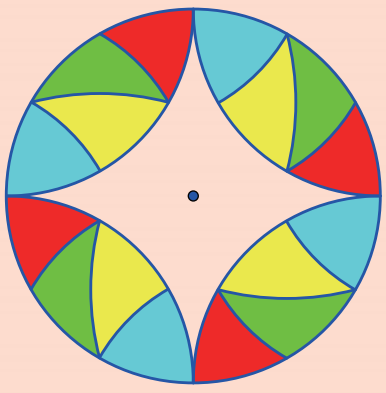
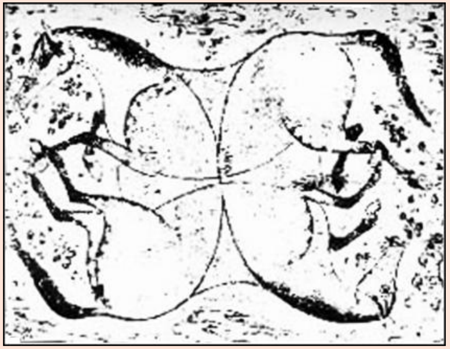
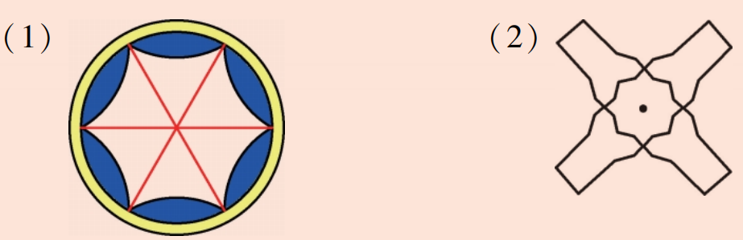
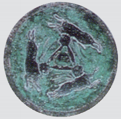
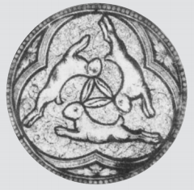
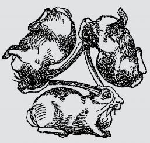

在日常生活中，我们经常可以看到，一些图形绕着某一定点旋转一定的角度后能与自身重合。如图9.3.10所示，电扇的叶片旋转 \(120^\circ\) 、螺旋桨旋转 \(180^\circ\) 后，都能与自身重合。你能再举出一些这样的实例吗？

用一张半透明的薄纸，覆盖在如图9.3.11所示的图形上，在薄纸上画这个图形，使它与图9.3.11所示的图形重合。然后用一枚图钉在圆心处穿过，将薄纸绕着图钉旋转，观察旋转多少度（小于周角）后，薄纸上的图形能与原图形再一次重合。

该图形绕圆心旋转 \(60^\circ\) 后能与自身重合（旋转 \(120^\circ, 180^\circ, 240^\circ, 300^\circ\) 后也能重合）。
做一做
设计一个旋转 \(90^\circ\) 后能与自身重合的旋转对称图形：将如图9.3.12所示的图形绕圆心旋转 \(90^\circ\) ，再将旋转后所得到的图形绕圆心旋转 \(90^\circ\) ，然后再重复旋转一次，可以得到如图9.3.13所示的图形。


将如图9.3.13所示的图形绕圆心旋转 \(90^\circ\) 后，可以发现旋转以后的图形能与原来位置上的原图形重合，因此该图形是旋转对称图形。当然该图形绕圆心旋转 \(180^\circ\) 或 \(270^\circ\) 后的图形也能与原图形重合，也可得出该图形是旋转对称图形。
你能设计一个旋转 \(30^\circ\) 后能与自身重合的图形吗？
可以以正十二边形为基础，每30°重复一个基本图案。
当旋转角度为90°、180°、270°时，图形与自身重合。
1. 举出日常生活中旋转对称图形的几个实例。
例如：五角星（旋转72°）、雪花（旋转60°）、风车、八卦图等。
2. 找找看，下面这幅古代艺术品图形中有几匹马？它们的位置关系大致如何？

这是经典的洛伊德四马谜题（也叫波斯人的马），属于视觉错觉类古代艺术品图形。是17世纪波斯风格的视觉谜题，后由美国谜题大师山姆・洛伊德（Sam Loyd）推广，利用人类视觉的完形感知，让重叠的线条同时构成多个完整形象。它们通过线条的巧妙共用与重叠，形成了一个视觉上的错觉，让观者可以同时看到4个完整的马形轮廓。4匹马以中心对称的方式分布在画面中，彼此的身体轮廓相互交错、共用线条。
3. 如图所示的图形绕哪一点旋转多少度后能与自身重合？

（1）绕中心旋转60°、120°、180°、240°、300°后与自身重合。；（2）绕中心旋转90°、180°、270°后与自身重合。
4. 任意作一个△ABC，再任意作一个点P，然后作出△ABC绕点P逆时针旋转60°后的三角形。（使用下方交互工具绘制）
从敦煌洞窟到欧洲教堂，敦煌的佛教洞窟与欧洲的基督教堂相距数千米，文化和宗教背景截然不同，然而，在相距几百年的时间里，却先后出现了完全相同的一种图案：三只兔子相互追逐形成一环。大英博物馆《国际敦煌学项目》（IDP News）首次披露了这一发现。



敦煌佛教洞窟中，至少有16个洞窟中出现了这一图案：三只兔子位于莲花的中心，耳朵相连，朝着不同方向，互相追逐，有的是顺时针（如305窟），有的是逆时针（如407窟）。这些洞窟建于隋朝和晚唐时期。但是，敦煌学文献中却找不到关于这一图案相关研究的记录。
而到了13世纪，在欧洲的德国、法国和英国某些基督教堂的屋顶浮雕等处，都发现了相同或相似的图案。这三只兔子是如何从中国传到欧洲的，一时成为敦煌学界的一大研究热点。有专家指出，这一图案是通过中国的纺织品经由丝绸之路传到欧洲的，但目前还没有确切的证据证实这一观点。对此，专家们还在进行研究，以期解开“三只兔子之谜”。
抽象能力： 从具体实例中抽象出旋转对称图形的概念。
几何直观： 通过旋转操作感受图形的对称美。
文化理解： 了解数学在人类文化遗产中的体现。